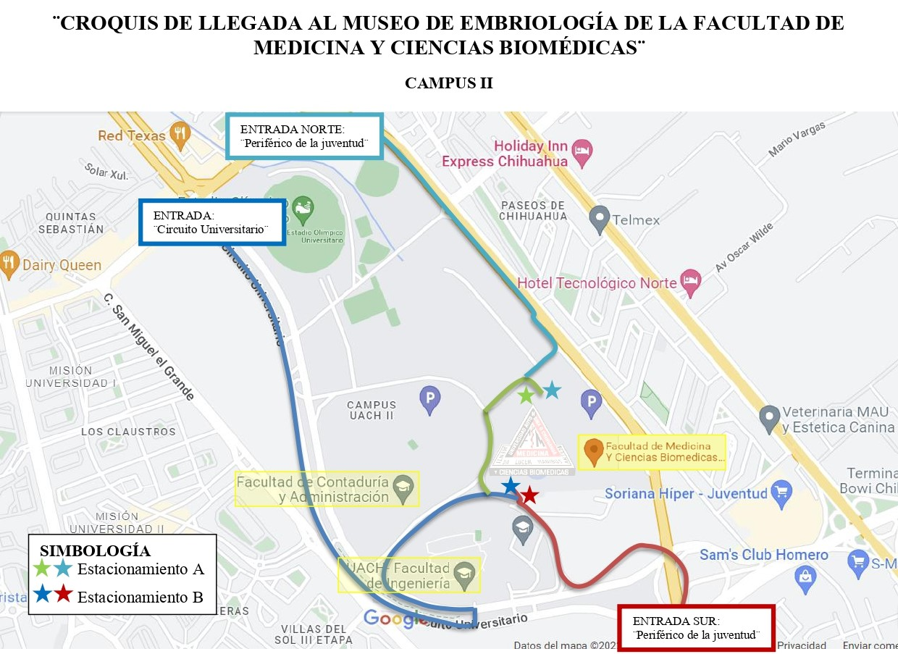

Ubicación
Campus II, Periférico de la Juventud
Facultad de Medicina y Ciencias Biomédicas
Universidad Autónoma de Chihuahua
Universidad Autónoma de Chihuahua
Museo de Embriología
"Dra. Dora Virginia Chávez Corral"
Facultad de Medicina y Ciencias Biomédicas · Campus II
1993
Fundado
30+
Años de historia
Quiénes somos
Misión
Nuestra misión en el Museo de Embriología "Dra. Dora Virginia Chávez Corral" de la Facultad de Medicina y Ciencias Biomédicas de la UACH es brindar la oportunidad a estudiantes y público en general, de observar a través de interacciones didácticas la secuencia del desarrollo embriológico y fetal, con maquetas en tres dimensiones, muestras biológicas y casos clínicos; para lograr que el conocimiento de Embriología sea significativo, eficiente y actualizado, contribuyendo a la educación de los estudiantes y del público en general.
Hacia dónde vamos
Visión
El Museo de Embriología "Dra. Dora Virginia Chávez Corral" será una institución pública sólida, dedicada a la difusión del estudio del desarrollo embriológico y fetal. Promoverá el pensamiento crítico en estudiantes y la sociedad, cumpliendo con los indicadores de desempeño correspondientes. Nuestra visión es ser un referente estatal y nacional en educación y divulgación científica sobre el desarrollo embrionario y fetal, inspirando a las personas a comprender, apreciar y dignificar la vida.
Nuestro recorrido
Historia del Museo
Por: Dra. Dora Virginia Chávez Corral
Explora el museo
Recorrido Virtual
Bienvenido a la embrioguía. Antes de entrar, conoce los contenidos que encontrarás en el museo:
Contenidos del museo — ruta de aprendizaje
01
Gametogénesis
Espermatogénesis
Formación y maduración del espermatozoide
02
Gametogénesis
Ovogénesis
Formación y maduración del óvulo
03
Fertilización
Fertilización
Unión del espermatozoide y el óvulo
04
Desarrollo
Semana 1
Segmentación e inicio del viaje al útero
05
Desarrollo
Semana 2
Implantación en el endometrio
06
Desarrollo
Semana 3
Gastrulación y formación de capas germinales
07
Desarrollo
Semanas 4 – 5
Organogénesis y pliegue embrionario
08
Desarrollo
Semanas 6 – 9
Maduración y diferenciación de órganos
Elige la experiencia que mejor se adapta a ti:
Para visitas generales
Recorrido con lenguaje accesible para el público general, familias y grupos escolares. Incluye la narrativa de cuento sobre el desarrollo embrionario.
Para estudiantes del área de la salud
Contenido técnico con terminología médica, casos clínicos y secuencia didáctica para estudiantes de Medicina y Ciencias Biomédicas pertenecientes a la Universidad Autónoma de Chihuahua.
Visítanos
Información
Croquis con la ubicación del Museo dentro de la Facultad de Medicina y Ciencias Biomédicas de la UACH.

📍
🏛️
Acceso
Entrada libre para el público en general
📞
Secretaría de Extensión y Difusión
(614) 439-18-24 · 414-49-73
414-21-45 · 414-52-97
414-21-45 · 414-52-97
Escríbenos
Contacto
Si deseas más información sobre el Museo, puedes visitar nuestras instalaciones o comunicarte directamente con nosotros.
Encuéntranos
Facultad de Medicina y Ciencias Biomédicas, UACH — Campus II, Periférico de la Juventud, Chihuahua, Chih., México.
(614) 439-18-24
414-49-73 · 414-21-45 · 414-52-97
414-49-73 · 414-21-45 · 414-52-97
Visitas y grupos
Para grupos y visitas guiadas te recomendamos agendar con anticipación a través de nuestro sistema en línea.